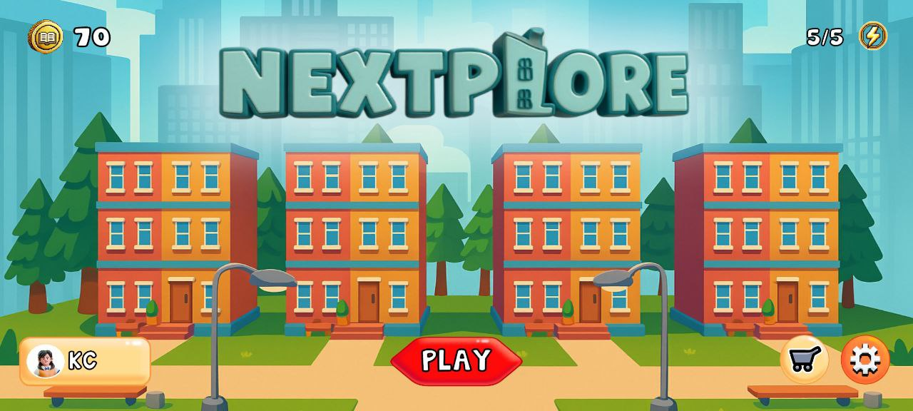
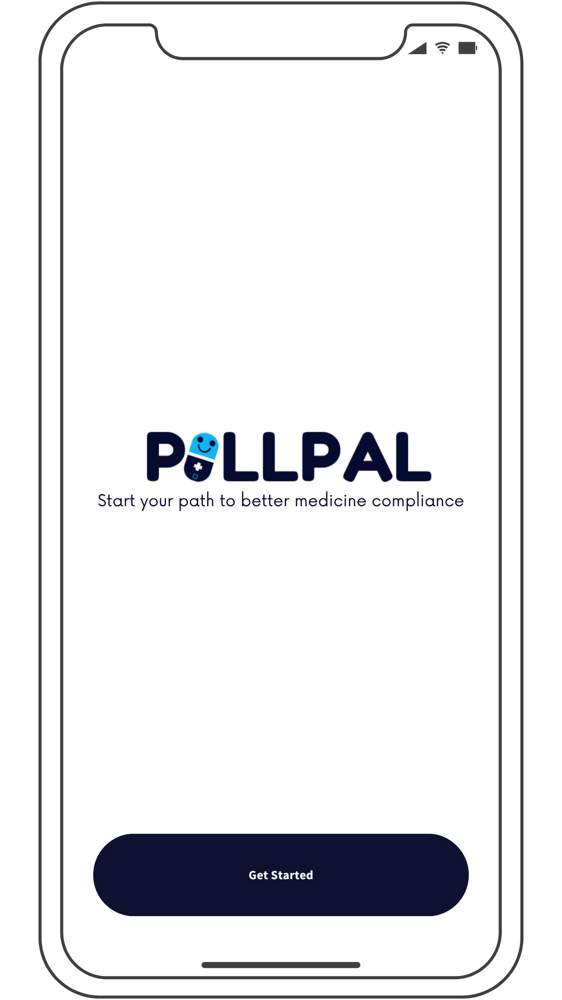
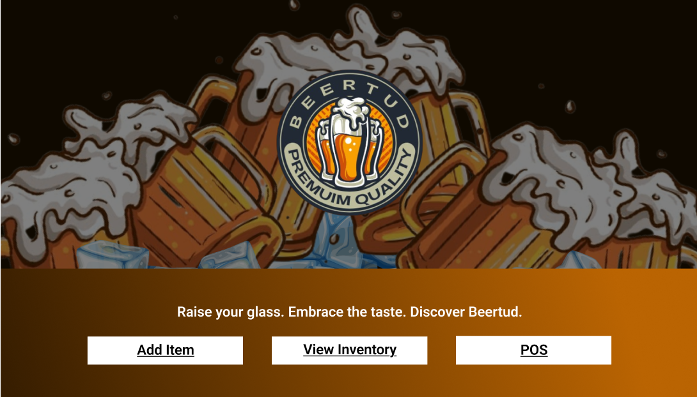

Web Development
Create responsive and interactive websites using modern front-end technologies while ensuring accessibility, usability, and performance.
HTML5
CSS3
JavaScript
Bootstrap
Available for work
Front-End Developer & IT Graduate focused on building responsive web applications, mobile systems, and data-driven dashboards. I design and develop user-centered solutions for academic, business, and real-world use cases using modern web and software technologies.

What I do
Create responsive and interactive websites using modern front-end technologies while ensuring accessibility, usability, and performance.
Develop software solutions for educational, healthcare, and business environments through analysis, design, and implementation.
Transform business data into actionable insights through dashboard development, data visualization, and reporting using Power BI.
Personal and interpersonal strengths that support teamwork, adaptability, and productivity in development environments.
Portfolio

A Unity-based 3D mobile application that helps incoming freshmen explore college programs through immersive virtual environments, assessments, and gamified learning.

Mobile Healthcare Application
PillPal is a medication reminder application that helps users manage prescriptions through scheduled reminders, medication tracking, and an intuitive mobile interface to improve adherence.

Point-of-Sale System
A desktop-based Point-of-Sale system that streamlines sales transactions, inventory management, and reporting for small businesses using C# and SQL Server.
Career Journey
CANB Inc.
Supported the Data Analytics team by designing relational databases, developing SQL queries, cleaning and validating datasets, and creating Power BI dashboards to provide accurate reports and business insights. Assisted in business process analysis to improve reporting efficiency and support data-driven decision-making.
Nextplore
Collaborated with a development team to build Nextplore, a Unity-based 3D mobile application that helps incoming college students explore academic programs through immersive virtual environments, interactive assessments, and gamified learning experiences. Contributed to Unity development, gameplay implementation, UI design, testing, debugging, and project documentation.
Full-Time Position
Actively seeking opportunities in Front-End Development, Data Analytics, Software Development, and Android Development. I am eager to contribute my skills in SQL, Power BI, database management, mobile application development, and software development while continuously learning and delivering high-quality solutions.
Academic Background
STI College Lipa
Completed coursework in software development, database management, web and mobile application development, systems analysis, networking, and data analytics. Participated in academic projects focused on real-world business and technology solutions.
San Antonio National High School
Specialized in Computer System Servicing (CSS), gaining hands-on experience in computer hardware assembly, operating system and software installation, network setup and configuration, preventive maintenance, and troubleshooting. Successfully completed the training requirements aligned with TESDA Computer Systems Servicing NC II.
Professional Development
SAP University Alliances
Completed foundational training in SAP S/4HANA, covering enterprise resource planning (ERP) concepts, business processes, and system navigation using the Global Bike simulation.
DATABIZ Conference
Participated in a technology conference focused on emerging trends in data science, artificial intelligence, business analytics, and data-driven decision-making.
TESDA
Certified in computer hardware servicing, operating system installation, network configuration, preventive maintenance, and troubleshooting following TESDA national competency standards.
About Me
I'm Klarence Cate O. Virtucio, a BS Information Technology graduate with experience in web development, Android applications, Unity systems, and data analytics.
I build applications for educational, healthcare, and business use cases such as interactive 3D learning systems, medication management apps, POS systems, and data dashboards. I focus on clean UI, functional design, and practical solutions backed by data and usability.
Academic Projects
Internship Experience
Technologies Used
BSIT Graduate
Get in touch
I am currently seeking opportunities in Front-End Development, Software Development, IT Support, and Data Analytics. I am actively looking for full-time roles where I can contribute my skills and grow within a professional team.